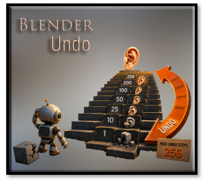
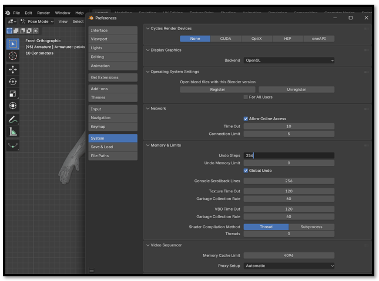

~11 Increase the Number of Undo Steps in Blender~
11/26/2026

By default, Blender only stores a limited number of undo operations. If you're working on a complicated project, it's surprisingly easy to reach that limit. Increasing the number of undo steps gives you a much larger safety net, making it easier to recover from mistakes without having to reopen an older save.
Fortunately, changing this setting only takes a few seconds.
Edit -Preferences-System-Memory & Limits -Undo Steps

Watch it: Blender's Undo Steps currently have a maximum value of 256. If you enter a larger number, Blender automatically changes it back to 256.